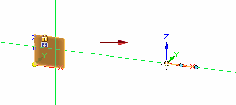

Construct a sphere feature
-
Choose Home tab→Solids group→Box list→Sphere
 .
. -
Press F3 to lock to a plane, or if you want to use automatic sketch plane locking, click to define the center point of the sphere.
For more information, see the Sketch plane locking help topic.

-
To specify the radius of the sphere, you can:
-
Drag until the sphere is the approximate size and then click.
-
Type a specific radius value in the edit box and press Enter.

-
The completed Sphere feature is shown in PathFinder.

Note:
The blue line bisecting the sphere is the Live Section. You can use this tool to move or rotate the sphere. For more information, see Working with Live Sections.